今天的二十条动态里，藏着三条彼此呼应的脉络。第一条是人工智能正在离开远端的机房：本地设备能自己组网算力，手机里住进一个能替你办事的助手，新药则第一次由算法从零找靶点、设计分子走到三期临床。第二条是量子技术正在挣脱低温与实验室的束缚，声波可以既搬运又保护量子信息，碳化硅在常温下把纠缠寿命拉长了两百多倍，商用芯片产线开始承接量子器件。第三条更安静：北冰洋的观测浮标实现了国产化，加拿大最后一座冰架湖彻底消失，而一块十六万年前的桡骨碎片和一座被遗忘的圣湖，同样是在用新方法重读旧证据。三条线索其实在说同一件事——谁能把自己放进更日常、更真实的环境里，谁就能先一步抵达实用。
把这二十条收拢起来看，今天真正发生的事情可以用一句话概括：技术正在从「演示」走向「日常」，而科学正在从「走近」转向「重读」。
第一条暗线是人工智能的「下沉」。过去两年，最先进的模型都住在远端的数据中心里，用户隔着网络向它提问。今天的几件事却指向另一条路：开源权重模型的迭代速度已经把差距压缩到以周计，一个新的本地组网工具能把工作站、小型主机和普通笔记本临时缝成一个私有算力集群，手机厂商把助手直接装进消费者机型开始发货。当能力被搬到离人更近的地方，评价标准也随之改变——不再只是谁的分更高，而是谁能以足够低的成本、足够稳的状态，持续地嵌进某个具体流程。药物研发提供了最直观的对照：一款由算法从零发现靶点、设计分子并推进到三期临床的药物完成首例患者给药，它真正的意义不在技术演示，而在整条产业链愿意为一个非人类提出的假设投入数年时间和真金白银。
第二条暗线是量子技术对「环境」的挣脱。这一领域长期以来给人两个刻板印象：必须极冷，必须关在实验室里。今天的三项进展分别在攻这一点：用金刚石中的声子同时承担传输与屏蔽两项任务，把自旋的相干时间提升约三倍；在碳化硅里借助常温可用的核自旋把纠缠寿命拉长两百四十倍；以及在商用三百毫米芯片产线上做出一枚同时具备读出与逻辑门操作的硅自旋器件。它们都还处在很早期，离实用有一段距离，但方向是一致的：把量子器件从特制实验室推向可复制的制造流程。工艺一旦标准化，规模化就不再只是实验室工程问题。
第三条暗线，是「重读旧档案」。北冰洋的冰站作业完成了，值得注意的不是航次本身，而是所有抛弃式浮标首次实现了国产化——这意味着我们读取极地数据的工具不再受制于人。加拿大那座存续四千多年的冰架湖彻底消亡，失去的不只是一片水，而是两套几乎不重叠的微生物群落，它们从未在其他地方被发现过。而在人文这一侧，一块据今约十六万年的桡骨碎片被确认属于丹尼索瓦人，一座从未见于文献的圣湖在神庙南侧被挖出，推翻了延续两百年的旧认识。这三件事方法不同，姿态却相同：承认自己手里最早的判断可能是错的，然后用新的工具再问一遍。
值得记住的是，这三条线索的交汇点都不是「更炫」，而是「更稳」。技术要下沉就必须足够便宜可靠，量子要走出实验室就必须能被制造，科学要重读档案就必须先有信得过的测量工具。今天没有一条新闻是爆炸性的，但方向足够清晰。
01
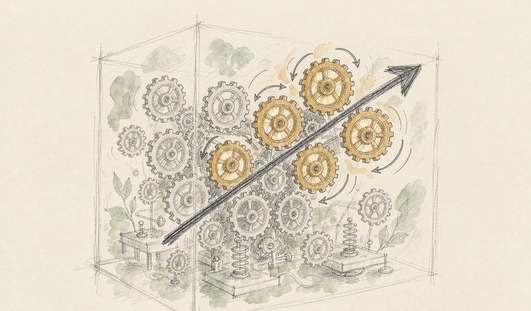
一个参数总量约 5520 亿的混合专家模型在本周正式上线国内主流云平台的模型市场，同步开放接口服务与调用额度。它的特点在于每次推理只激活其中极小一部分参数，同时原生支持图像理解，在多语言基准与网络安全类评测上表现突出。
观此：参数规模的竞赛正在让位给成本效率的竞赛。当同样一次调用可以用更少的算力完成，模型才可能被真正嵌进每天发生千万次的小任务里。这也解释了为什么开源权重路线近来步步紧逼：决定谁能被大规模使用的，从来不是最大那个，而是最便宜且够用的那个。
来源：界面新闻
02
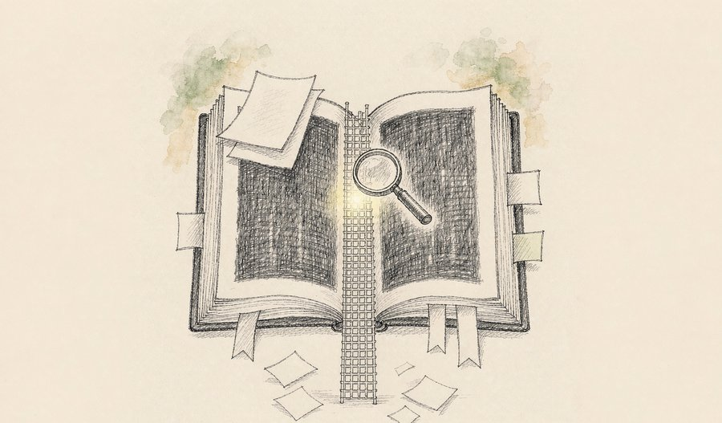
一个面向基因组变异影响的可检索数据库近日开放，覆盖人类基因组中约九亿个可能的单碱基变化，对每一种变化都给出预测的分子层面影响，并配有可排序的影响评分。数据集规模约 1PB，同时提供网页入口、编程接口与云端服务。
观此：过去判断一个罕见变异是否有害，往往要靠比对人群数据库与文献，耗时且常无结论。把九亿种可能一次算清并公开检索，等于把「查文献」变成了「查字典」。它的价值不在于预测本身有多准，而在于让全世界的实验室都能用同一套基准去验证和修正。
来源：HeadsUpAI
03
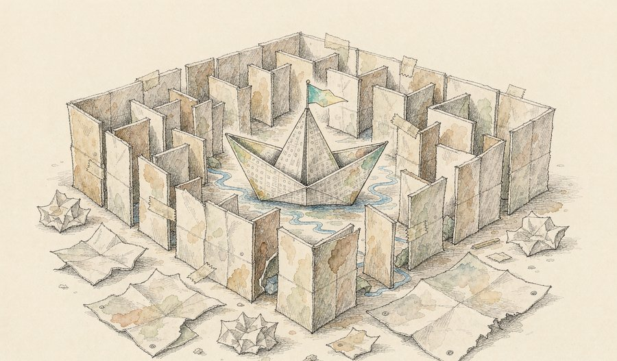
一款由生成式算法从零完成靶点发现与分子设计的候选药物，近日在国内两家医院完成三期临床试验的首例患者入组与给药，试验采用每日一次口服、持续五十二周的方案，目标是特发性肺纤维化。该分子在更早的试验阶段曾显示出改善肺功能的信号，并已获得境外孤儿药资格与国内突破性治疗品种认定。
观此：传统新药从立项到上市常需十年以上，靶点大多来自人类研究者长期积累的假设。这次的不同在于，被验证的靶点此前并未被学界重点关注，是算法从数据里挑出来的。三期临床只是倒数第二步，成败仍未定，但它证明了一件事：算法提出的假设，已经值得让整个体系押上数年时间去赌一次。
来源：医药养生保健报
04
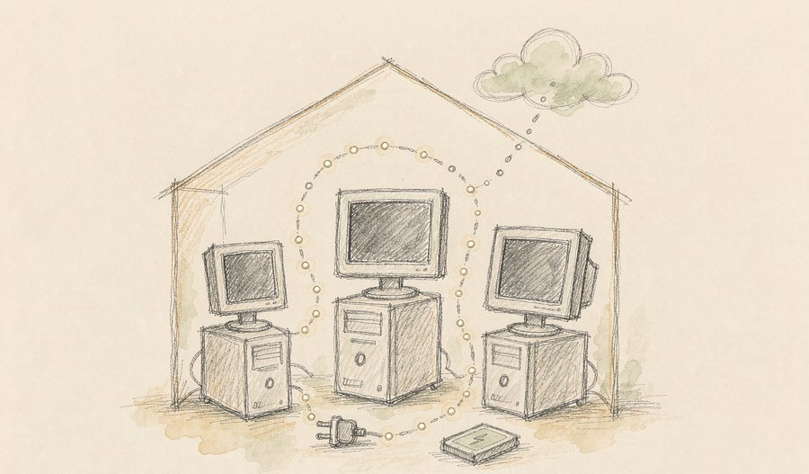
一家芯片厂商发布了一个免费测试工具，可以把同一局域网内的图形工作站、小型主机与普通笔记本连成一个私有算力池，自动把推理请求分发到当下空闲的设备上，无需依赖云端。工具支持主流的本地模型运行环境，覆盖多个桌面操作系统。
观此：这几年大家习惯把算力想成远方的电厂，而这类工具把它重新拉回家里。对隐私敏感、断网也能用的场景来说，这是很实际的一步。更重要的是思路的转变：算力可以像水电一样在局域网内流动，闲置的机器不再是闲置。
来源：HeadsUpAI
05
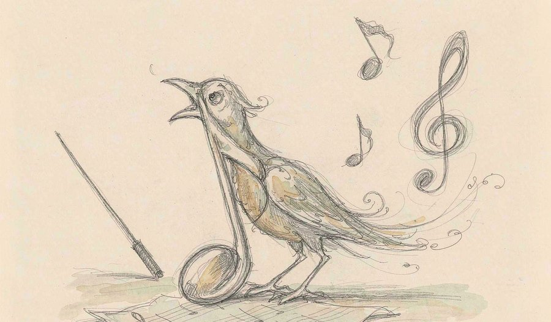
一款新的音乐生成模型本周在多处产品入口上线，可直接生成高保真立体声音频，包括带主歌与副歌的完整歌曲，支持自定义歌词与按时间戳控制段落结构，所有生成音频均嵌入来源标识。
观此：从「生成八秒旋律」到「生成一首结构完整的歌」，中间隔着编曲、结构与混音三关。真正的看点是段落可控与来源标识同时到位：前者让它进入实际制作流程，后者则回应了内容溯源这一行业隐忧。创作工具一旦能把意图精确传达，人机分工就会重新划定。
来源：HeadsUpAI
06
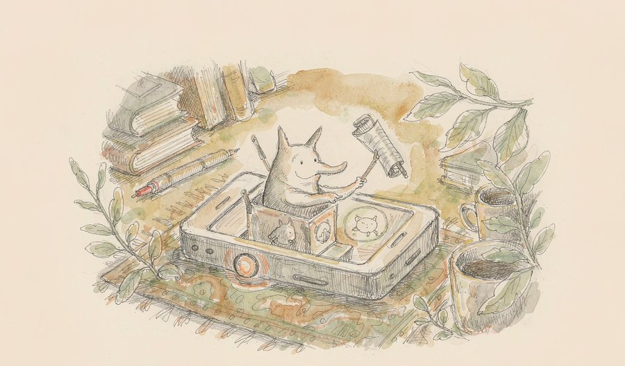
一款手机端智能助手的消费者版本正式发布，首款机型已开启预约并发售。该助手支持语音与实体按键等多种唤醒方式，相比去年的技术预览版本，官方强调这次更侧重稳定性与日常可用性。
观此：助手类产品过去常卡在「演示惊艳、日常难用」这一步。把唤醒方式做成实体按键，意味着它被当作随时可叫的工具，而不是需要郑重打开的应用。真正的分水岭不在模型多强，而在用户会不会在第三天还继续用。
来源：界面新闻
07
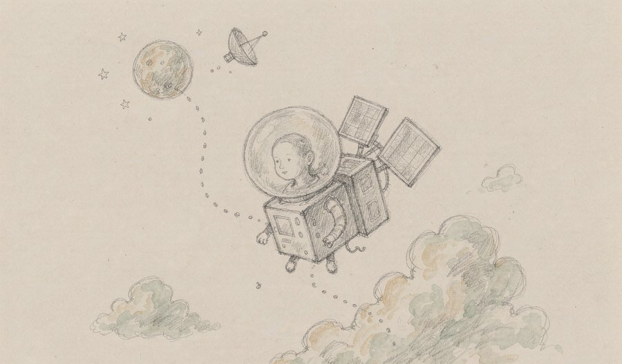
一位航天企业负责人在社交平台上表示，有信心在明年把一款专为人工智能设计的计算机送入太空。这类设备针对太空环境做了加固，可在轨完成图像处理与模型推理，减少把原始数据全部传回地面的带宽压力。
观此：遥感卫星每天产生海量影像，而带宽有限，把数据先算一遍再回传是自然的思路。真正的门槛不在能不能送上去，而在散热、供电与长期可靠性——轨道上是没有机房的。这一步若走通，天上的算力会成为对地观测这类场景的新基础设施。
来源：界面新闻
08
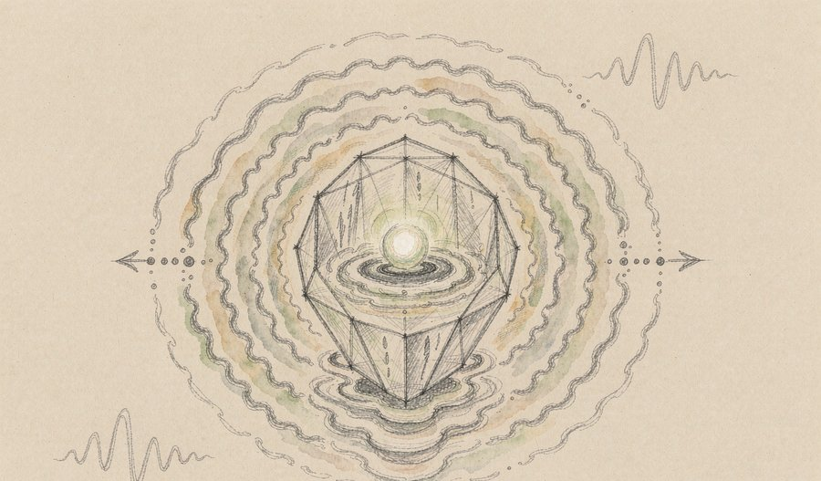
研究人员在一颗金刚石色心的电子自旋上，用持续的声学驱动把量子比特推入一种受保护的「着装」状态，使相干时间延长约三倍，同时把操控频率推到八百兆赫兹。相关成果发表于《自然·物理》。
观此：量子器件最怕周围环境的扰动，传统做法是用精确时序的微波脉冲去纠偏，但这与谐振腔中的强耦合需求相冲突。这次换了个思路：用同一股声波既搬运信息、又提供屏蔽，一个器件干两件事。它给紧凑型片上量子网络提供了一个更现实的工程方向。
来源：ScienceDaily
09
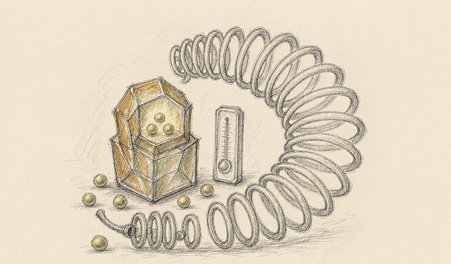
一支研究团队在一种碳化硅晶体缺陷上构建了包含一个电子自旋与两个核自旋的三比特寄存器，通过交换门把电子与核之间的纠缠转移保存，测得纠缠寿命比裸电子自旋延长约两百四十倍，转移保真度在九成以上。成果发表于《自然·电子学》。
观此：纠缠寿命短是量子信息最实际的敌人，而这次的关键在于它发生在常温、且材料本身与现有半导体产线兼容。这意味着量子节点或许不必依赖极低温设备就能长期保存信息。对传感、探测这类近期就能落地的应用来说，这个消息比更宏大的计算目标更贴近现实。
10
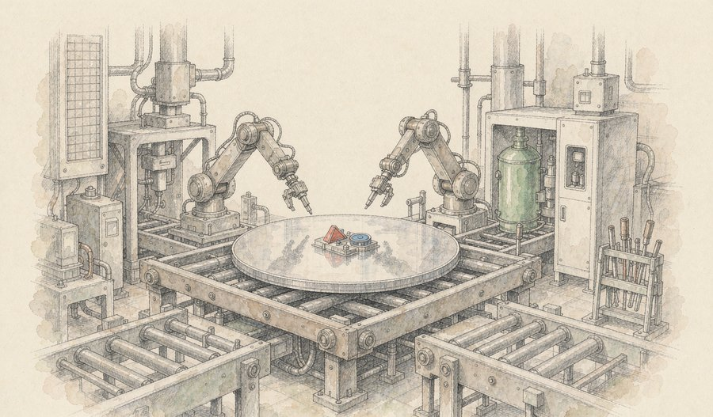
一家量子硬件公司公布了在商用三百毫米全耗尽绝缘体上硅工艺线上制造的硅自旋器件，同一块芯片上完成了量子比特的初始化与读出、单比特门以及双比特纠缠门操作，衬底采用同位素纯化的硅材料。
观此：实验室里做出几个量子比特并不稀奇，难的是让它们可复制、可批量、可测试。把量子器件放到成熟商用产线上，等于借用整个半导体产业数十年的良率经验。目前公开的只是基础操作能力，比特数与保真度尚未披露，但路线已经清晰：先用制造能力换规模。
11
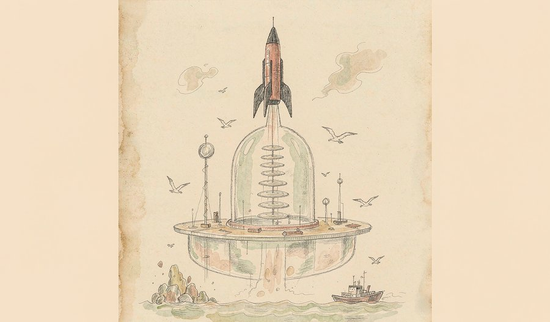
昨日清晨，一枚固体运载火箭在我国东部海域点火，将八颗低轨互联网组网卫星与一颗通信技术试验星共九颗送入预定轨道，采用堆叠组合体与平板星混合的搭载方式。此次任务净载荷重量超过三吨、入轨高度约八百公里，均创下我国海上发射纪录，组网卫星总数增至两百五十六颗。
观此：海上发射的价值在于可以把发射点挪到最合适的位置，而这次更值得注意的是「距上次任务仅五十六天」与「卫星在上海造、在上海附近海域发」这两点——它验证的是高频次与陆海联动的产业能力，而不是单发火箭的运力。堆叠式搭载则直接降低了单颗卫星的分摊费用。
来源：环球时报
12
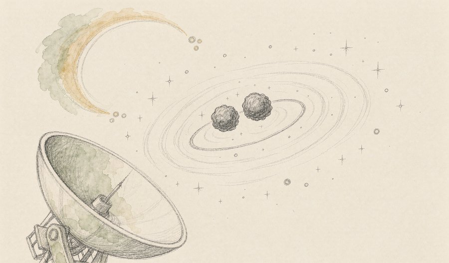
依托一台大型射电望远镜的超高灵敏度，一支巡天团队捕获到一颗处于紧致轨道的双中子星系统。该系统轨道周期极短、总质量在已知同类中最低，多项观测结果精确验证了广义相对论。相关成果已发表于《物理评论快报》并被选为重点推介。
观此：双中子星是检验引力理论最苛刻的天然实验室：轨道越紧、周期越短，引力效应越极端。这次发现的系统恰好落在极端一侧，而它的总质量偏低，又为理解宇宙中重元素的来源提供了新样本。大国重器的价值往往体现在这种「顺手验证基础物理」的时刻。
来源：财联社
13
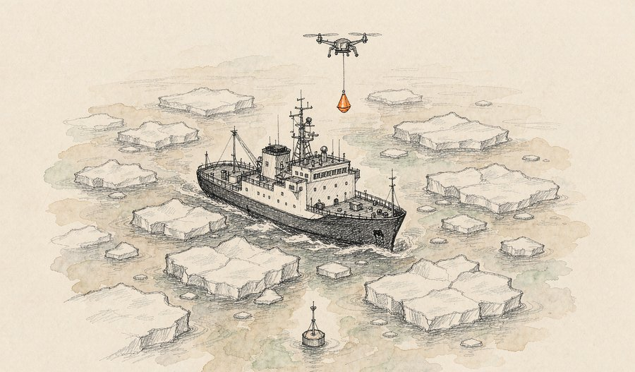
我国第十六次北冰洋考察的两艘破冰船近日在高纬冰区共同完成全部冰站作业，实现大气、海冰、海洋与冰下生态的协同观测。本航次布放的抛弃式冰基浮标实现全部国产化，其中剖面浮标为极地首次规模化应用，并首次用无人机完成远距离浮标投放。
观此：极地研究的瓶颈常常不在科学家，而在观测装备能不能长期待在冰上。浮标全国产化意味着数据获取不再受制于外部供给，而无人机投放把过去需要直升机或人力完成的作业变成了几分钟的事。观测成本的下降，最终会体现在数据密度上。
来源：科技日报
14
一项新研究证实，加拿大最后一座冰架湖已彻底消亡。该湖泊由冰架充当天然冰坝封堵峡湾河口，淡水浮于海水之上形成稳定分层，湖面长年覆盖厚冰，孕育出两套几乎无物种重叠的微生物群落，其中部分物种从未在北极其他区域被发现。随着维系结构的冰下通道持续变薄，湖泊蓄水体系最终崩塌。
观此：值得注意的不是消失本身，而是消失的方式——它没有发生剧烈崩塌，而是随着通道缓慢变薄直到无法维持。这种「慢性失去」往往更难被察觉，却更难挽回。四千年积累的独特生物群落无法在其他地方重建，这类损失在通常的环境统计里几乎不占分量。
来源：央视新闻
15
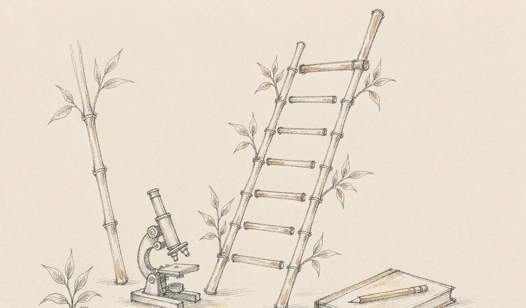
在本周于韩国举行的世界肺癌大会上，中国研究团队共有多项研究入选口头报告，数量创下纪录。其中一款靶向 B7-H3 的抗体偶联药物在三期研究中公布了期中分析结果，被报告为刷新了该适应症二线治疗的最长总生存期纪录；另一款同类药物的三期研究显示，患者死亡风险较对照方案降低约五成。
观此：小细胞肺癌长期被视为难啃的硬骨头，二线治疗几十年进展有限。真正值得关注的变化是「头对头」——另一项研究直接拿国产药物与既有标准疗法正面比较并在两项核心指标上取得阳性结果。这意味着竞争维度已经不只是「有没有效」，而是「能不能做得更好」。
来源：腾讯新闻
16
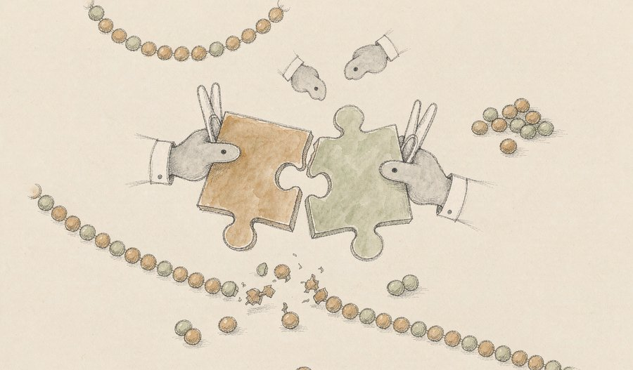
一项针对系统性红斑狼疮的一期临床研究结果发表在国际顶级医学期刊上，为全球首次报告的同类治疗模式。研究采用双特异性抗体，一端结合 T 细胞表面分子，另一端锁定致病 B 细胞标志物，引导患者自身免疫细胞清除异常 B 细胞。结果显示该方式有望帮助患者摆脱长期依赖激素与免疫抑制剂。
观此：狼疮治疗的困境在于「缓解—复发」的循环，第一年内绝大多数患者至少复发一次。这类衔接器与需要采集、改造、回输细胞的疗法相比，可标准化生产、现货使用、剂量可调，把个体化治疗变成可规模供应的方案。难点仍在长期安全性与复发率，但路径已经打开。
来源：极目新闻
17
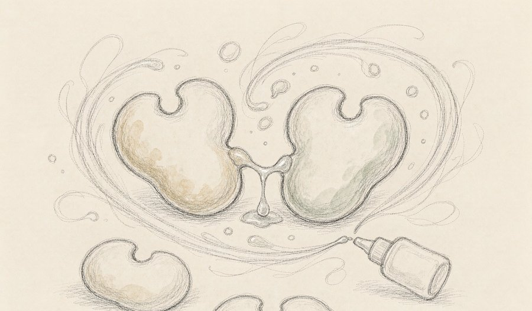
一项发表于《自然》的研究首次证实，一类小分子化合物可以充当「分子胶水」，稳定某种肾上腺素受体的同源二聚体，从而实现信号通路的偏向性调控。该机制为哮喘、慢性阻塞性肺病等气道疾病的新药研发提供了新的分子基础，并可能推广到其他同类受体。
观此：临床常用的平喘药物存在一个长期问题：用久了效果会打折扣。研究的价值在于把「为什么受体会脱敏」这个问题，转化成了一个可以被小分子干预的具体结构状态。基础研究的意义常常如此——不是立刻造出药，而是先把可以下手的点标出来。
来源：南方都市报
18
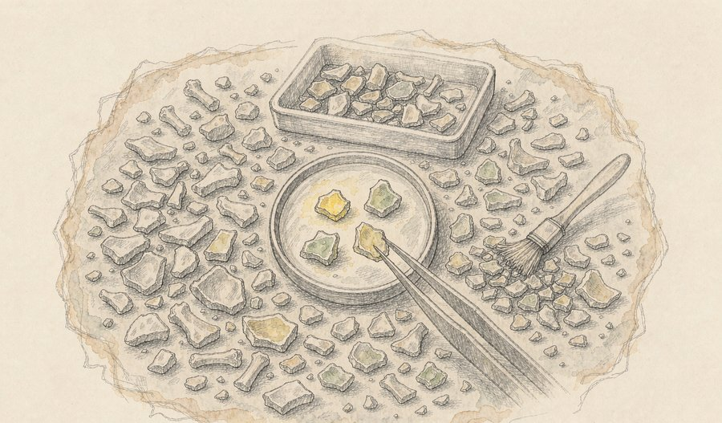
研究团队在一处洞穴遗址的六万余块碎骨中，通过形态学预筛与古蛋白分析相结合的方法，确认了三块古人类骨骼碎片与两颗牙齿共五个样本属于距今约十六万至十三万年前的丹尼索瓦人。其中一片桡骨碎片是目前全球唯一被确认的该人群桡骨化石。
观此：丹尼索瓦人长期只留下零散的基因痕迹，化石极其稀少，原因很简单：在大量碎骨中，靠肉眼几乎无法分辨。这次真正可复制的是方法——先用形态特征缩小范围，再用蛋白质指纹确认，把筛选效率提升了数量级。方法一旦立住，更多遗址就有了新的可能。
来源：人民日报海外版
19
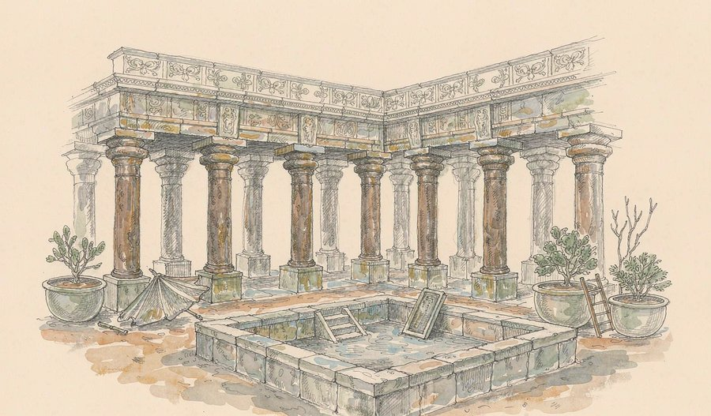
一支联合考古队经过八年发掘，在一座古埃及神庙遗址南部发现了此前没有任何文献记载的第二座圣湖，占地约五十平方米、深约五米，石砌湖壁与取水台阶保存完整。此前学界普遍认为一座神庙区只会设置一座圣湖。考古队还清理出官员献祭石碑，并为复原古埃及晚期历史提供了新线索。
观此：考古史上第一座通过发掘全新发现的圣湖，出自一次「明知不太可能还是往下挖」的决定。两百年形成的共识，往往不是被新理论推翻，而是被一次具体的发掘推翻。这类发现也提醒我们：现有教科书里的确定性，很多只是尚未被检验的默认值。
来源：央视新闻
20
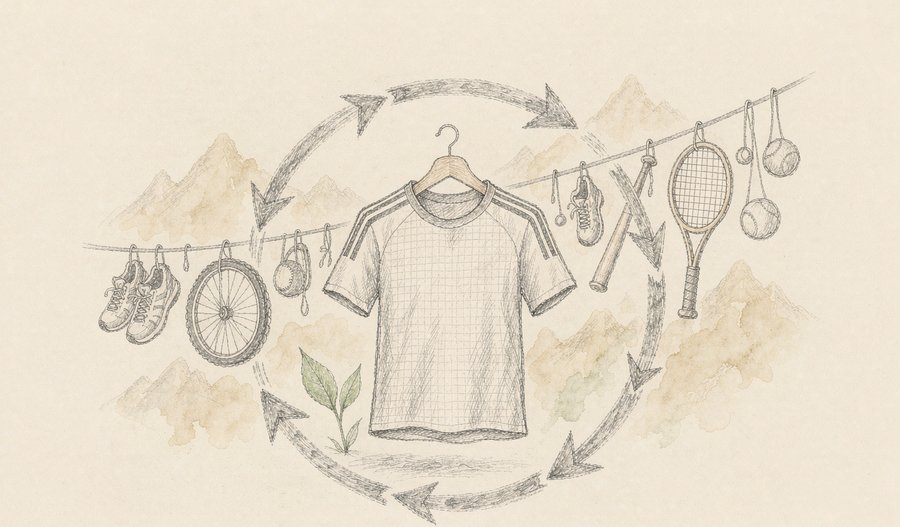
一家体育用品企业发布了为二十支国家队打造的比赛与训练装备，覆盖体操、水上运动、举重、自行车等多个大项。同一周内，多个户外品牌相继公布采用再生可回收面料或可修复结构的新品，材料循环成为运动装备行业共同的发力方向。
观此：顶级赛事的装备竞争早已不在款式，而在面料、压胶、贴合这些看不见的地方。而当「可回收」「可修复」开始成为新品发布的关键词，说明行业的评价指标正在变化：一件衣服的价值开始被计入它报废之后的部分。这种变化通常先在专业线发生，再慢慢渗到日常。
来源：美通社
今天的二十条里没有轰动的头条，但把线条连起来看，格局其实是清楚的：技术竞争的胜负手，正在从「能做多少」转向「能稳定地用在哪里」。
人工智能这一侧，一个以效率为核心的模型接管了平台入口，一份覆盖九亿位点的数据库把基因解读变成可检索的公共服务，一款由算法提出靶点的药物进入三期临床——三件事分别对应成本、知识与验证，合起来说明这套技术正在长出自己的基础设施。量子这一侧的三项进展都指向同一道题：如何让极端敏感的器件在更普通的环境里存活并被制造出来。而地球与人类自身的历史这一侧，观测浮标国产化、冰架湖消亡、丹尼索瓦人与圣湖的新证据，则在提示我们另一件事——我们对世界的认识，很大程度上受限于手里的工具，工具一变，结论就得重写。
如果说今天有什么值得记下来的判断，那就是：真正改变生活的技术，几乎都不是最惊人的那一个，而是最先变得便宜、可靠、随手可用的那一个。
本文插画由 AI 辅助绘制。